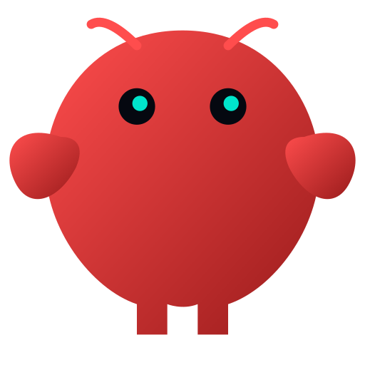

Script
Ready
Bấm vào slide để bắt đầu...
Âm Thanh
Ready
@viro
@viro

OpenClaw 2026.5.2
🔌 Plugin installs/updates are sturdier
⚡ Gateway + agent hot paths are leaner
npm-first plugin cutover thay đổi cách cài plugin.
Gateway nhanh hơn, channel ổn định hơn bao giờ hết.
Plugin Chuyển Sang
npm-first
ClawHub
npm
terminal
$ npm install @openclaw/plugin-web
✓ installed in 1.2s
Grok 4.3
xAI
DEFAULT
Gateway Performance
Nhanh Hơn Đáng Kể
Before
0.0s
After
0.0s
Lazy load plugin thay vì import tất cả
CACHE
Cache system prompt → giảm CPU
Non-blocking
Session store không còn block request
Bốn Cải Tiến
Cốt Lõi
01
Plugin npm-first
02
Gateway restart force
03
Tool descriptor cache
04
Path guard tối ưu
Đổi Lớn Thì
Luôn Có Rủi Ro
Plugin cũ
Có thể mất metadata sau cutover
Config stale
Sẽ bị doctor tự động sửa chữa
npm-first
Là tương lai — ClawHub fallback
30+ Channel
Được Sửa Lỗi
Discord
Giữ button qua restart, retry 5xx
Telegram & Slack
Stream preview ổn định hơn
WhatsApp
Đóng zombie socket an toàn
Chốt Lại
OpenClaw 2026.5.2 không phải bản vá nhỏ.
Nó là cuộc đại tu toàn diện cho hệ sinh thái plugin và channel.
Follow @viro để cập nhật tech mới nhất.
1/7